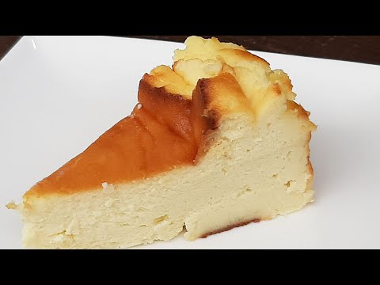

Un deliciós pastís de formatge que pots preparar fàcilment a casa per a qualsevol ocasió especial!
Ingredients
- 200 g de galetes (tipus Digestive)
- 100 g de mantega
- 500 g de formatge crema
- 200 ml de nata per muntar
- 150 g de sucre
- 3 ous
- Extracte de vainilla
Passos per a l'elaboració
- Tritura les galetes fins que quedin com una pols fina.
- Barreja les galetes triturades amb la mantega fosa i distribueix la mescla al fons d’un motlle, premsant bé.
- Preescalfa el forn a 180 °C.
- En un bol gran, bat el formatge crema amb el sucre fins que quedi una mescla homogènia.
- Afegeix els ous un a un, la nata i un toc d’extracte de vainilla, continuant amb el batut.
- Aboca la mescla sobre la base de galetes.
- Enforna durant uns 50 minuts o fins que el centre estigui lleugerament ferm.
- Deixa refredar completament abans de servir.